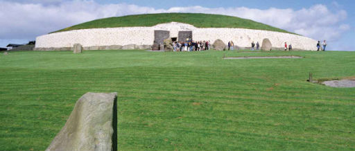

Art & Archaeology, Newgrange

This early morning tour is led by Professor Muiris O Suilleabhain, Associate Professor of Archaeology and former Head of the School of Archaeology, UCD, and brings you just 8km inland from Drogheda to Bru Na Boinne, meaning the palace or the mansion of the Boyne, and the name given to one of the world's most important archaeological landscapes, dominated by the spectacular prehistoric passage tombs of Newgrange, Knowth and Dowth.
Focussing on Newgrange, O Suilleabhain throws a spotlight on one of the most important features of the monuments, the art, and its technique, interpretation and significance.
Sunday 4 May
Venue: Meet, St Peter's Plaza, West St.
Travel by bus to Newgrange
Times: 8:30am Sun 4 May, return approx 3 hours
Tickets: 15 in advance, Max 20 people